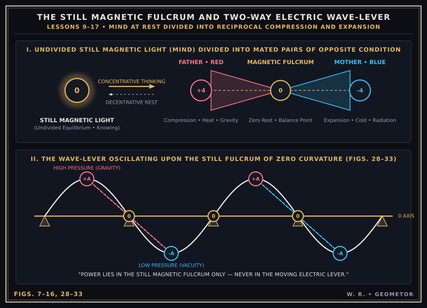
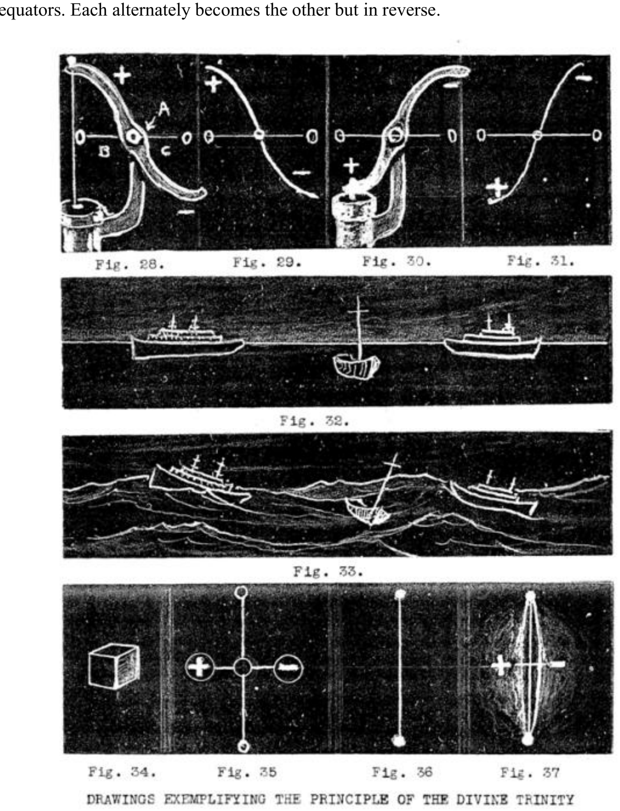
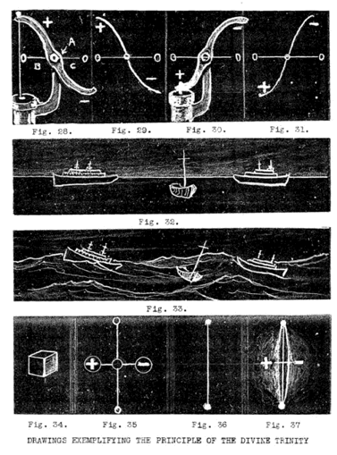

Lesson 17: The Fulcrum and the Lever¶
GEOMETOR Revamped Cosmogony Plates
This lesson’s core geometric diagrams have been reconstructed as precision parametric vector plates:


GEOMETOR Vector Reconstruction (Figs. 28–33): The Wave-Lever Oscillating upon the Still Fulcrum of Zero Curvature.¶
Before continuing our long journey from matter of earth to its Source “behind the scenes” in the invisible universe, I cannot restrain myself from telling you the great satisfaction it is giving us to hear how gloriously you are even now applying it to your lives. Our greatest desire is to “worthily fulfill our purpose”. Your letters convince us that we are, for when the little part of the journey you have already travelled has revealed so much to you already what a wonderful thing it will be when you actually KNOW that complexity is but the multiplied illusion you have been limited to during past ages and that “behind the scenes” is the REAL SIMPLICITY of ONE, centering an extended TWO, which will dissolve all complexity from your thinking forever.
I will continue to dwell upon energy and its Source, also its expression in the divided universe, for quite a little time until you begin to be able to automatically forget material effect the farther you go in our little journey back to the undivided and unchanging Source.
There is no more important thing for you to know than the Source of energy you use for operating your material body–and for motivating the thought bodies you create in your imaginings before giving them material bodies–and for manifesting all mechanical expressions ranging from lifting a feather to moving a locomotive or a mountain.
There is only one Source of energy and one mechanical principle by means of which it can be used. That is what I must make clear to you, and I must dwell upon it until it is made so clear by words and diagrams that you can apply it comprehensively to your creative thinking with greater power. Likewise the chemist, electrical engineer, inventor or physicist can apply it to the simplification of his mechanical processes.
You will make a good beginning in building up your comprehension by giving deep thought to the following postulates and axioms which go to the root of the subject. These postulates really define energy but no definition of energy can explain it without great amplification because orthodox thinking has made it impossible.
POSTULATES CONCERNING ENERGY¶
God is all. In Him is all energy, all knowledge and all Being.
God created His universe with energy which is in Him, not in His creation.
The energy of God’s Mind is DESIRE to give expression to idea of His knowing by giving imaged forms to His Being.
Mind KNOWS and thinks what it knows.
f. 0160 · p. 160Energy lies in Mind knowing but is expressed, or manifested, by Mind thinking.
Energy is still. God’s magnetic Light is at rest. God’s Mind is the fulcrum upon which the lever of His electric thinking pulsates to give heartbeat to His universal body, created by Him in the image of His knowing.
Energy lies in CAUSE but is expressed in EFFECT.
AXIOMS¶
EFFECT cannot be its own CAUSE. THINKING cannot be the KNOWING which it expresses. The PRODUCT of energy cannot be energy. The moving lever cannot be its own fulcrum. Simulated idea in moving forms cannot be the idea it simulates.
CONCLUSION¶
Creation is the product of God’s Mind knowing. It is made manifest by Mind thinking.
The PRODUCT of Mind, created by the energy of Mind, cannot be the Mind which created it.
As I said above, these definitions cannot define with comprehension unless amplified patiently, and simply, and with much repetition of example.
This I will do in every day language without the use of any scientific terminology whatsoever, for that is not necessary. If you will review the past lessons you will find that I have not yet used any scientific terms which are not a part of every day common usage except possibly the word “polarity”. Such words as gravitation are scientific terms which everybody understands, and such words only will be used.
If, however, I am obliged to use any other words I will as clearly define them as I defined polarity to be the division of an equilibrium into pairs of opposite conditions. You will never have to look up any strange word of the scientists vocabulary in a terminology dictionary.
Before resuming our subject of energy which motivates the universal heartbeat I wish you to realize that we have not yet, complexed the foundations of scientific principle beyond the principle of The Divine Trinity, nor will I do so unto the very end, for Nature does not complex it.
Nature multiplies the three of The Divine Trinity into wave octaves of nine, which are the same three multiplied by three to create the illusion of a three dimensional universe by the seeming projection of light radially.
f. 0161 · p. 161And so you will find the simplicity of three unto the very end in all things. Waves of light are the very basic exemplification of The Divine Trinity AND THE UNIVERSE CONSISTS OF LIGHT WAVES ONLY. When we begin to build octave wave fields and explain wave structure you will find nothing more complex in principle than you are perfectly familiar with in the workings of the old fashioned kitchen pump handle which our forefathers had to use constantly to pump water into the kitchen from the well. That principle is all that God or you have to use in creating material bodies–the principle of The Divine Trinity of energy and energy expression which underlies all unfolding-refolding things.
I am sure that you will not say that you cannot comprehend that simple principle of the pump. Therefore you can comprehend the most complex electrical, chemical or mathematical effects, or how God unfolds and refolds suns and planets, by the same process and principle with which he unfolds and refolds the daisy in the meadow.
You have always heard that matter emerges from space in some mysterious manner, and that space again swallows up matter and absorbs it into itself. That is true, but the way that matter emerges from space is the same way that the pump handle draws water from the well.
The only difference is that there are hundreds of billions of wave pump handles pumping furiously in every cubic inch of matter to pump light out of the well of space, instead of water out of a well of earth. The motivating principle is the same, so also are the mechanics.
I will now give you a series of simple ideas to ponder over–ideas which are steps in trying to comprehend how desire of Mind manufactures thought-imaged bodies which are subsequently given material bodies.
I used the word “manufacture” purposely, instead of “creates” for the process is as much one of manufacture as any product of a factory is. By using this word, however, it will accentuate that fact to you, and I want it to do so for reasons which will be self evident as we progress. I will number the ideas as we build up the structure of the whole process.
REGARDING THE KITCHEN PUMP¶
IDEA No. 1. I have diagramed a pump handle in Fig. 28. Study it carefully and note that all of it moves up and down except one point marked A. That one point is motionless–still–unchanging. That still point is on the equator which divides the polarity of its two compressed and expanded extensions which I have marked B and C.
That one still, immovable point is called the fulcrum, and the two extensions, which are the handle of the pump, are known as the lever.
IDEA No. 2. All of the energy which that moving pump handle manifests is in its immovable fulcrum. Without the fulcrum there could be no motion to express power, therefore energy could not be expressed.
THE POWER OF STILLNESS¶
IDEA No. 3. Ask yourself where you could logically place the source of expressed energy in the fulcrum and the lever. Could it possibly be in the moving lever if the lever could not move without a fulcrum? Your answer could only be that the energy is supplied in the fulcrum and extended to the lever to manifest the power of the fulcrum.
f. 0162 · p. 162

IDEA No. 4. In Fig. 29 I have diagramed a wave. No matter whether it is a wave of water, a sound wave, a radio wave or the wave of an electric current. You will note that it is just like the fulcrum and lever which constitute a pump handle. Its fulcrum is fixed, immovable, still and unchanging. Its lever extends to both sides of its equator (wave axis) just as the lever of the pump handle extends.
IDEA No. 5. Vision in your memory the troughs and crests of the familiar waves of the ocean. The crest of each wave interchanges with the trough, which is its oppositely sex conditioned mate. Troughs and crests are sequentially interchanging through their equators. Each alternately becomes the other but in reverse.

Archival Plate (image036.gif)¶
Fig. 30 is the pump handle showing its wave-crest and trough reversed. Positive and negative conditions interchange at their equator and each become the other by reversing their direction of motion, just as life and death, and every other pair of opposites [do.]
f. 0163 · p. 163Fig. 31 exemplifies the same principle in the wave.
IDEA No. 6. If you comprehend how the pump principle works by thrusting a piston in one direction and pulling it back in the opposite direction you can comprehend the heartbeat of this electric universe of light waves, for light waves pump in exactly the same way. The top of the pump handle is the crest of every electric wave, sound wave, radio wave, water wave or any other kind of wave.
IDEA No. 7. There is a piston on the wave of your pump handle which you can see but there is an invisible piston on every wave of every kind in Nature which you cannot see.
IDEA No. 8. In the undivided universe there are no waves, therefore there are no pistons, no polarization into pairs of opposite conditions. In such an equilibrium motion is impossible, for even the slightest motion means the development of polarity, and polarity means two unbalanced conditions which seek balance in each other through the motion of interchanging each other’s condition. That search for balance through the motion of interchange is the expression of energy which is not in motion at all, but is really in the equilibrium of the undivided universe.
To illustrate my meaning see Fig. 32 and 33. Fig. 32 represents the calm surface of the ocean. All of the ocean’s energy is in that stillness, waiting to be expressed, just as all of the violence of exploding dynamite is in the unexploded stick, or as the whole oak tree is in its unfolded seed.
The moment the equilibrium of the ocean is disturbed by being divided into two opposite conditions the dynamic electric universe of two-way motion replaces the static condition of rest.
Electric wave pistons then pump all the energy measured out to them by the heartbeat of the universe. Each wave is “geared” to the universal heartbeat so each wave then does its share in keeping this sexed electric universe of motion from disappearing into its own equilibrium, as it immediately would if all motion ceased.
In Fig. 33 the same ships which floated motionlessly upon the undivided calm as in Fig. 32 are tossed about like match sticks by the tremendous conflict which is now going on because of the sex passions of divided father and motherhood of gravitation and radiation which are seeking balance WITH each other THROUGH each other.
What is actually happening is that the two unbalanced sex conditions are seeking voidance of their opposed conditions by interchanging equally with each other. The divided seeks the undivided. When the two opposed conditions become undivided as one their sex passions are satisfied. Fig. 32 represents this satisfied condition of an equilibrium in which motion is impossible.
In. Fig. 32 every point upon the ocean’s surface is equal in respect to both gravitation and radiation. Each point is the same distance from the earth’s center of gravity. That means that each point is fifteen pounds pressure per square inch.
f. 0164 · p. 164IDEA No. 9. The difference between the two effects in Figs. 32 and 33 tell you what electricity is. ELECTRICITY IS MOTION. Without motion there is no electric expression–no waves–no pistons–no pump. The measure of electric force expressed is the measure of the strains and tensions set up by dividing one condition into two, and an equal strain or tension in the desire of the two to become one.
Electricity expresses itself in the North-South dynamic directions only. See Fig. 16 on Page 175. The amplitude of every wave of every nature points directly toward, and away from, the center of gravity.
Falling rain for example falls directly toward the earth’s center and rising water vapor returns upon the same radial lines. That is an expression of electrical energy, for the falling rain is charging the planet and discharging space, while the rising vapor is charging space and discharging the earth.
When water vapor rises to a level of equal pressure it then floats upon its static diameter which parallels the earth’s surface. Electric expression then ceases, for there are no waves, or wave pistons, on the static levels which are equal in distance from the earth’s center.
IDEA No. 10. In order to better comprehend what I mean by the strains and stresses of electric pressures which cause sex passion in Nature, imagine elastic bands stretching from the center of gravity to every point of an ocean wave. In a wave these elastics would be unequal in length, therefore there would be a greater strain on some than others.
Upon the calm ocean there is no such inequality, therefore, there would be no unbalance. All stresses and strains would cease as though they never were.
In your own business and social life you may express yourself as dynamically as you choose so long as you balance each opposite with the other, but the moment you unbalance them unequally you will have to pay the price of breaking God’s inviolate law.
Business or matrimonial sex unbalance suffer alike. Giving and regiving must be equal and opposite else businesses crash, homes break up, friendships cease and many and varied ills affect the body which could not have happened if giving and regiving were equal and balanced.
If your social, business or sex life is not balanced you can never find rest, or peace, or happiness. That would be impossible, for any residue of unbalance, left over from your greatest efforts to balance them would prevent your finding happiness, peace or rest.
To express your life dynamically you must be strong in your knowing of God’s law, otherwise it will react against you mightily. That is as true of the chemical elements–or even of musical tones as it is of humans, for it is God’s law and has no exceptions.
If you do not balance your takings by your givings that residue of unbalance will make happiness impossible, where, instead, you may have the greatest of happiness by balancing them.
In Fig. 34 we have an example of perfect balance which results from a perfectly balanced transaction in Nature. It is a cube crystal of sodium-chloride which is the result of a balanced union of sodium and chlorine as exemplified in Fig 35. Sodium is the positive, and chlorine is the negative. They are perfectly balanced sex mates and their union voids both as dynamic opposites.
The cube crystal exemplifies your happiness resulting from a balanced transaction. In it there is no residue of unbalance as there is no residue of unbalance in your business and personal transactions when there is an equal interchange. Therefore peace, happiness, and health are only possible when one is spiritually and physically in balance.
f. 0165 · p. 165Sodium and iodine, or sodium and bromine would make good mates but in each would be a residue of unbalance which would show in their crystallization by distorted cubes of sodium iodide or sodium bromide.
In Fig. 35 you will note that the static and dynamic diameters are ninety degrees from each other. In sodium-iodide they would be less than ninety and in sodium-bromide they would be less still. In a like residue of unbalance lies all of your troubles of business, health or social relations. With such a residue you are out of tune with yourself and all things else.
While speaking about being out of tune with your environment or associates I will use a musical tone to exemplify more specifically what I mean by the words “residue of unbalance”.
Fig. 36 represents the A string of a harp. That string is only one of a whole octave group. If you pluck it–as in Fig. 37, it will vibrate between its positive and negative divisions, as sodium and chlorine do in Fig. 35. The string is now expressing itself dynamically for sound extends from its silence.
Suppose, however, that its vibrations do not balance with the vibrations of the other strings of its octave. It is then out of tune with them. It can never be satisfied with its own accomplishments while that residue of unbalance remains.
CONCLUSION¶
The reason I dwell upon these simple examples is because all Nature repeats in its every phase the experiences of your own life. The more you KNOW Nature, its laws and processes, the more you can work knowingly with God.
Life is hard only for the ignorant. The greater your knowledge of God’s ways, the easier and more glorious your life can be. Many people are out of tune in their business, social and domestic life simply from ignorance of the essential knowledge for finding happiness. If you hear a piano which is badly out of tune your senses are jarred, but many lives are very badly out of tune without doing anything about it.
No one can live life gloriously without a workable philosophy. A philosophy which has a scientific basis will fortify you in the certainty of its practical workability.
A religion which is in tune with a scientific philosophy will be like unto the North Star to a mariner. A religion which has but an emotional basis is a quicksand, but when you add knowledge to the highest of spiritual emotions, you are surely upon a solid rock with your eyes to the Light instead of to the dark.
There should be no guess work about life. Guessing is the method of ignorance. No one need be ignorant. Everyone can have all knowledge–for all knowledge exists–and is simple–and is yours for the desiring.
Information, techniques and skills are complex, but they are not knowledge. These alone will not lead you to the Light.
Until you do know the path to the Light and walk it knowingly, [you] will travel many paths in the dark, and your flesh will be torn with thorns, and you will be low in spirit and shrouded with self-pity in the measure of your not knowing.
I say to you, therefore, the more you make God’s ways your ways, the more you will manifest God’s power to live gloriously, prosperously, powerfully and with great happiness, for the path to the Light is clear, and illumines all of your way if you but know the path.
f. 0166 · p. 166The following words from God’s Message will give spiritual force to my meaning.
“For I say that man who senses but clay of earth in him is bound to earth and clayed image of earth.
“Clayed images of My imagining who knoweth not Me in them are but dwellers of earth’s dark. To sensed man the doors of My Kingdom are self-barred by darkness until the Light of Me in him is known by him as Me.
“Until then he is but moving clay, manifesting not Me in him while sensing naught but moving clay of him, knowing not the glory of My light in him.
“Wherefore, I say to thee, exalt thou thyself beyond thy sensing. Know Me as fulcrum of thy thinking. Be Me as deep well of thy knowing.”
–From The Divine Iliad